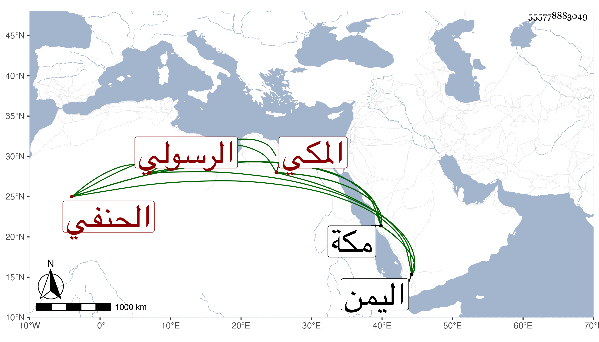

0902Sakhawi.DawLamic.ITO20230111-ara1.EIS1600.555778883049
Biography ID: 555778883049
435
عمر بن يحيى بن أحمد بن الناصر يحيى السراج بن الشرف الرسولي المكي الحنفي أخو إسماعيل الماضي وسبط الجمال محمد بن الضياء الحنفي ، أمه أم هانئ ويعرف كسلفه بابن سلطان اليمن . ولد بمكة في سنة ثمان وستين وثمانمائة ممن سمع مني بمكة وأثبت له ولأخيه في سنة بضع وتسعين نظر المدارس الرسولية بمكة حتى آجرا كاتب السر الزيني المدرسة المنصورية ثم حلا لهما ذلك فرافعا حتى أخذا المجاهدية والأفضلية ممن هما تحت يده ثم ما قنعا بذلك حتى استنجزا في سنة خمس وتسعين مرسوما بقبض المعلوم الواصل للثلاثة المدارس ثم أجر الأفضلية للبدري بن الجيعان ولم يستثن مسجدها ولا قوة إلا بالله .
